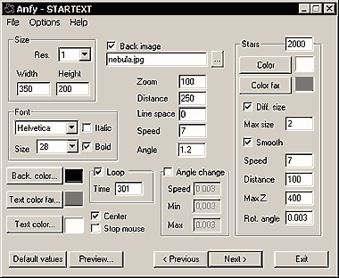

|
This applet shows a perspective text scroller like in the starting
titles of the "Star Wars" movie. The text starts from
the screen bottom and scrolls up to the top, fading to a choosen
color.
[For more technical
information about the available parameters, click here.]
Most parameters are self-explanatory and you can
always see brief description of each parameter by moving the mouse
pointer over the wizard.

Basic Settings
Define the Width and Height of the applet,
and select the Resolution value, which works as a zoomign
factor. For the best result, use resolution = 1. Select either Background
Color or Background Image in the respective fields.
Text settings
Press "Next >" and type in the
text, or import from a text file. Come back to the text effect configuration
page. Select Font Type, Style (Italic, Bold), and Size.
There are two types of Text Color: Far Text Color
and Near Text Color. If you want the lines of the text centered
in the screen, check out Center box. You could Loop
the text scrolling, and set Loop Timing at Time box. This
defines the in-between wait time before starting the next loop.
Optionally, increase spacing between lines with the
Line Spacing parameter. With Distance parameter you
set the distance of the text: use greater values to send far away
the text. Use the Zoom parameter if you want to zoom in or
out the text on the screen. Set the Angle of text scroll,
using a floating point value. Default value is "1.3",
and setting it to "0.0" you will obtain a normal vertical
text scroller. Don't forget to set the Speed value for the
text scrolling.
Next, you can enable angle bouncing with Angle
Change box checked. In this mode, you will have to set Angle
Change Speed, Min and Max Angles. If you want to stop
the text when you enter the applet area, check Stop Mouse
box.
Stars
Give the Stars box your choice of number of
starts to plot. The value of "0" results in no stars.
Set both Star Color and Far Star Color. Check out
Smooth box, if you want to draw stars with different smoothed
colors according to near and far color parameters. Otherwise all
the stars will be drawn with starsColor parameter. If Different
Size box is checked, perspective rendering of stars is enabled.
In other words, the nearer the starts come, the bigger they look.
However, the size of the stars could be limited by the value for
Maximum Size. Next, set the Speed of the stars and
the Star Distance. The greater the value for Star Distance,
the nearer the stars. The Maximum Z value corresponds to
the maximum stars distance on the z axis; use big
values to add distance to the stars origin. Finally, place in the
Rotation Angle box a floating point value for the star rotation
speed. Use negative values for inverse rotation.
Now, proceed to the
expert menu.
|